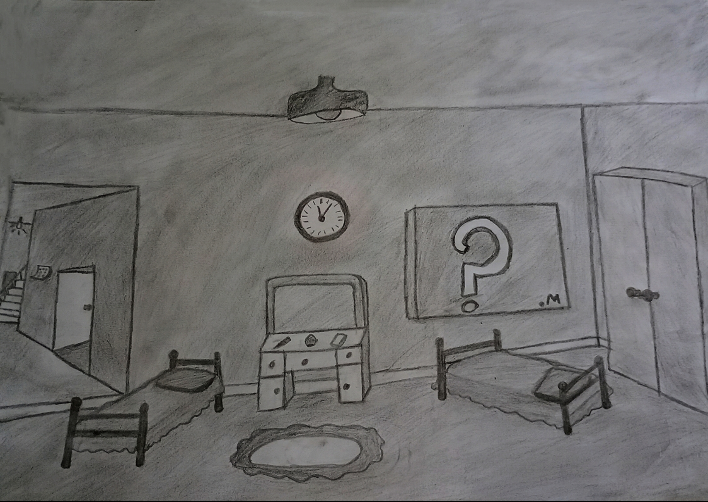

Você não está perdido. Desde o início das nossas vidas, escondemos quem somos — e, muitas vezes, escondemos isso de nós mesmos. Por quê? Bom, penso que pode ser por várias razões. Uma delas talvez seja o medo... ou a vergonha de ser quem realmente somos diante dos outros.
Mostrar nossa essência assusta. A gente quer ser visto — e, mais ainda: compreendido. Mas o medo da rejeição, do julgamento ou da estranheza dos outros nos faz esconder.
Escondemos tão bem, que acabamos esquecendo quem somos de verdade por um tempo, decidindo deixar esse "eu" de lado.
“Vergonha é o medo de desconexão — a crença de que algo em mim me torna indigno de ser amado.”
— Brené Brown, A Coragem de Ser Imperfeito
Então a gente cresce, muda completamente e fica com aquele pensamento de que antes era melhor. Ou mais fácil. Ou fazia mais sentido. É como se, por dentro, a vida estivesse sem sal — mas o sabor ainda estivesse guardado em algum lugar dentro de você.
Talvez isso ajude na convivência com alguém que deseja, porém é extremamente desconfortável a longo prazo, pois o ser humano só se sente realmente bem consigo mesmo quando mostra quem realmente é e vê que as pessoas gostaram disso.
Quando você se esconde, está apenas tampando um buraco da estrada. Quando se mostra, revela os buracos, mas mostra que apesar disso vale a pena andar por ela mesmo com seus defeitos e deformações.
Se tem uma coisa que aprendi com o tempo, é que a dor molda tudo em você. Os “nãos” que recebemos, a raiva que passamos quando crianças... tudo isso deixa marcas.
Mas se você for uma pessoa reflexiva vai perceber que — em vez de apenas chorar se entregando ao sentimento — faz mais sentido entendê-lo. E aí vai parar para pensar se tudo isso realmente faz sentido. Se vale a pena se deixar levar pelos sentimentos e impulsos que eles provocam.
Principalmente quando você está explodindo por dentro — seja de raiva, tristeza ou até paixão. Algumas pessoas, ao invés de simplesmente aceitarem e se entregarem a esses sentimentos, escolhem entendê-los. E, sinceramente, acho que essa é a forma mais verdadeira de viver.
Porque, para mim, sentir é pouco demais. Sentir e entender é a forma mais pura de existência.
“Entre o estímulo e a resposta, existe um espaço.
Nesse espaço está o nosso poder de escolher nossa resposta.
E, nessa escolha, reside nossa liberdade e nosso crescimento.”
— Viktor E. Frankl, Em Busca de Sentido
Isso não significa que você vai encontrar todas as respostas para suas perguntas, e nem que será de forma imediata — muito menos que sua vida ficará melhor só por pensar mais.
Lembre-se: quanto mais você sabe, mais se decepciona — justamente porque muitas verdades amargas destroem as doces mentiras em que sua vida estava acomodada.
Por isso se frustra: consigo mesmo, com as pessoas ao redor, até mesmo com a vida.
Mas prefiro questionar aquilo que me influencia justamente para entender aonde aquilo está me levando e quais consequências estão trazendo.
Ao longo da minha vida, vivi muitas frustrações e me iludi com histórias fantasiosas na minha cabeça. Muitas vezes, você até sabe que está se enganando — mas não quer aceitar, porque dói demais perder aquilo em que sua vida estava apoiada.
A paixão, por exemplo, é intensa no começo, mas extremamente passageira. Muitas pessoas confundem isso com amor. Mas, quando a paixão vai embora, o que sobra?
Notei que, quando nos sentimos sozinhos ou sem direção — como se a vida tivesse perdido o sabor ou o propósito — buscamos preencher esse vazio com o que for mais acessível: prazeres rápidos, distrações, vícios emocionais. Isso até te supre... por um tempo.
Só que há um problema: essas coisas não deixam raiz. Não há recompensa duradoura, só alívio momentâneo. Mesmo que alguém tivesse prazer ilimitado por tempo ilimitado, continua sendo algo sem propósito. É apenas reflexo do instinto — não uma construção. É movimento sem direção.
Percebi também que o que você sente não pode ser seu guia. Sentimentos são reações, respostas a algo externo — não podem ser seu centro de comando.
A decisão é uma escolha consciente, não um impulso cego.
Sua bússola precisa ser feita de escolhas conscientes. Vontade sem razão é impulso. Impulso sem clareza é só desperdício.
Viajar só porque “sentiu” vontade pode parecer liberdade — mas, muitas vezes, é apenas fuga. A tentativa de viver algo que parece bonito na cabeça, mas vazio no fim.
E quando isso machuca — como o fim de um relacionamento — a dor não é só pela ausência do outro. É pela ausência da ilusão em que sua vida estava baseada.
“Não somos responsáveis pelas emoções, mas sim pelo que fazemos com elas.”
— Viktor E. Frankl
O amor verdadeiro não nasce do que se sente, mas do que se escolhe.
O amor verdadeiro não age pelo retorno — ele age pelo que acredita valer a pena, portanto pelo que se escolhe. Ele supera a natureza humana.
Assim como alguém escolhe continuar algo que, mesmo não sendo lucrativo materialmente para si próprio, ainda vale a pena — ou até escolhe ser prejudicado no lugar do outro, mesmo sem receber nada em troca — o amor é escolher perder e ainda assim sair ganhando, pois a compreensão do próprio ato é maior e mais valiosa do que a própria perda.
Se você ama, você persiste. Se só “gostava” por causa do que recebia, vai desistir assim que parar de receber.
A mensagem é simples:
Não se entregue ao que não compreende, compreenda o que tem se entregado.
Não viva procurando uma sensação, viva procurando um sentido.
Só nas escolhas conscientes há aprendizado, crescimento e legado.
Adoramos o novo: uma música diferente, um rosto diferente, uma emoção diferente.
Um parceiro novo, por exemplo, parece ser o ânimo que faltava na vida. Ter algo que queríamos parece ser sinônimo de felicidade mesmo — até querermos algo melhor ou mais novo. No fim, sempre estamos buscando algo novo.
Quem busca prazer em ter, e não em construir, está morto, preso no ciclo da auto-satisfação constante.
Nosso corpo insiste em dizer que precisamos de mais: outro carro, outro rosto, outra sensação.
Mas, no fim, a sensação de insuficiência sempre volta.
É aí que entra o autoconhecimento — entender o porquê do que se sente e quem é você no meio disso tudo.
A graça da vida não está na novidade — mas no propósito. E se você não tem isso, se entrega a qualquer coisa.
Se a sua vida não precisa de sentido, o que dirão suas ações?
O propósito não está em experimentar tudo. Está em saber o que vale a pena viver.
Dedicar-se a algo é construir um tipo de prazer que não te prende, mas te impulsiona.
Já estive dos dois lados. E por mais doce que algo pareça no início, não vale a pena viver por aquilo que termina sem deixar raízes.
Nada vale mais a pena do que se tornar a melhor versão de si mesmo para si mesmo e para aquilo que acredita. O que vem depois disso é consequência.
“Não se contente com algo que seja bom demais para passar, mas medíocre demais para permanecer.”
— C.S. Lewis
E no final da vida, se alguém te perguntar:
"Quem é você?"
Você terá orgulho da sua resposta.
Você já se fez essa pergunta?
Nem todo mundo questiona o que acredita ser bom. A maioria só questiona o que incomoda.
Mas talvez essa seja uma das perguntas mais importantes:
Por que você quer ser feliz?
E mais: você sabe mesmo o que é felicidade?
Vivemos em um tempo onde é comum ouvir:
“Só quero ser feliz.”
Mas se você não sabe o que é, ou por que quer isso... sua busca pode se tornar sem direção.
Muitos acham que felicidade é ter o que se deseja. Mas só percebem a ilusão disso quando finalmente têm tudo — e mesmo assim, não estão felizes.
“Cuidado com o que você deseja, porque você pode conseguir.”
— Oscar Wilde
A sociedade confundiu o prazer, o ter, o conseguir e o ser com a felicidade. Mídias, redes, músicas — tudo prega que ser feliz é ter o que quiser.
Mas isso só aprisiona na necessidade de sempre “ter mais”.
Felicidade não é prazer.
Não é viver se satisfazendo a cada momento.
Se fosse, não estaríamos sempre insatisfeitos, pelo fato de que o que realmente nos satisfaz é ver que valeu a pena.
“A felicidade não depende do que você tem ou de quem você é.
Ela depende unicamente do que você pensa.”
— Dale Carnegie
Muita gente busca “felicidade” — mas o que realmente quer são sensações.
Ganhar algo pronto nunca tem o mesmo peso de construir.
“O que chamam de busca da felicidade é a raiz da própria tristeza.”
— zYn
Porque, enquanto você acredita que precisa alcançar a felicidade, vive frustrado por ainda não tê-la.
Felicidade não é uma linha de chegada.
Não é algo fora de você.
Ela está na forma como você vê o mundo.
Na aceitação do que está presente — mesmo quando imperfeito.
“A felicidade da sua vida depende da qualidade dos seus pensamentos.”
— Marco Aurélio
Sim, o que você pratica acaba se tornando quem você é. Por quê?
Porque tudo aquilo que você repete também se acostuma, e isso influencia aos poucos seu modo de pensar e sua forma de ver o mundo.
Você está treinando sua mente o tempo todo, quer perceba ou não. Cada pensamento alimentado, cada decisão, cada atitude que se torna rotina — tudo isso transforma a estrutura da sua mente.
Aquilo que você faz com frequência deixa de ser apenas um comportamento: passa a ser parte de você.
Isso nos leva a uma conclusão importante: no fim das contas, o que mais influencia quem você se torna não é o que sente, nem o que aprendeu, mas o que faz com isso.
“Somos o que repetidamente fazemos. A excelência, portanto, não é um ato, mas um hábito.”
— Aristóteles
Fugir da consciência é uma tarefa difícil. Quanto mais tempo você passa dentro da sua mente, mais você pensa.
E o que alivia ou apaga isso temporariamente?
As ações. Os hábitos. Sejam eles bons ou ruins.
No meu caso, foram as distrações. Coisas que pareciam inofensivas — ou até “boas” — mas que, na minha compreensão atual, não levavam a lugar nenhum.
Quando essas coisas que te davam algum tipo de direção (ainda que ilusória) desaparecem, a vida perde o rumo.
Primeiro, porque quem passou tempo demais fugindo da própria consciência não consegue simplesmente parar de uma hora para outra.
Segundo, porque, se não houve propósito, também não houve conquista. Portanto, por mais que você parecesse estar “caminhando”, no fim, nem saiu do lugar.
E é aí que, quando você percebe isso, tem a chance de sair do ciclo.
Você não pode ser feliz o tempo todo — e não vai ser.
Justamente porque precisa entender o que é verdadeiramente tristeza para reconhecer o que é verdadeiramente felicidade. E isso se dá para qualquer outra coisa na vida.
Quando você não sabe o que é dor ou vazio, mesmo as melhores experiências perdem o valor.
O bom deixa de ser bom o suficiente. E é aí que surgem os vícios: a busca constante por algo que te faça sentir “vivo”, mesmo que não te leve a lugar nenhum.
O que é esse vazio?
Essa angústia que parece vir de um passado distante — ou até de algo que nunca tivemos.
É como um estado inalcançável da existência.
Sim, é confuso.
É como abrir o coração pela primeira vez:
de repente, nada parece dar tão errado —
e até o que dá errado se torna irrelevante.
Você está acima dos problemas, se sente enfim preenchido por algo que parece eterno e infinito.
Nesses momentos, todo julgamento perde a razão.
A raiva, o ódio… tudo se dissolve.
A perda dessas coisas, pessoas ou sensações parece ser terrível, quase destruidora.
Mas essa ausência não é apenas perda: é abertura.
É espaço para o novo.
Talvez o novo não te preencha da mesma forma que o antigo.
Talvez não traga a mesma intensidade.
Mas pode fazer tanto sentido quanto qualquer outra coisa que você já tenha vivido.
Você vai perder bons amigos, conhecidos, parceiros.
Vai se lembrar de como poderia ter sido e vai se perguntar:
“E se…?”
Mas o “e se” é uma prisão.
De fora, alguém talvez já soubesse como aquela história terminaria —
não porque tem mais experiência,
mas porque olhava com a razão e não com o peso dos seus sentimentos.
Encare a perda como algo real,
mas não como algo imensurável.
O tempo transforma montanhas em migalhas.
Isso é tão natural quanto inevitável.
Acredite: tudo isso mudará muitas coisas em você — talvez para algo melhor, talvez para algo pior.
Tudo dependerá da forma como você vê o mundo e encara seus problemas.
"No fim você nunca perdeu nada, apenas se tornou algo novo."
— zYn
É difícil colocar em palavras o que penso sobre isso.
Se tudo o que digo for apenas opinião, muitos não lhe darão valor.
Mas, se for certeza, exigirá provas — tanto para mim quanto para quem desejo compartilhar essa ideia.
No meu caso, tenho uma convicção inegável da existência de Deus por causa das minhas experiências com Ele.
E, para mim, essa certeza é suficiente.
Mesmo assim, busquei entender racionalmente o que há ao meu redor — e descobri que a existência de um Criador é muito mais provável do que eu imaginava.
Tudo o que existe é extraordinariamente bem organizado.
A própria padronização da natureza é uma marca da inteligência.
E onde há ordem, há mente.
Isso nos leva a crer que o universo — e tudo o que há nele — foi formado por um ser inteligente, e não por mero acaso.
Pense na complexidade de uma única célula viva.
Ela depende de proteínas específicas, formadas por cadeias de centenas de aminoácidos dispostos em sequência exata.
Existem 20 tipos de aminoácidos, e o número de sequências possíveis para uma proteína com algumas centenas de unidades já ultrapassa o número estimado de átomos no universo observável.
Isso significa que, mesmo considerando todo o universo observável — com toda a sua matéria, tempo e energia — o número de tentativas fisicamente possíveis é insignificante diante do espaço combinatório necessário para que estruturas biológicas funcionais surjam por acaso. Além disso, a entropia reforça esse limite: a tendência natural do universo é a desordem, não a formação espontânea de estruturas altamente ordenadas.
Assim, mesmo ao longo de bilhões de anos, o acaso não se torna mais plausível; ele permanece matematicamente insuficiente desde o início.
Em termos práticos, processos puramente aleatórios não dispõem de tempo, tentativas ou recursos suficientes para explicar, por si só, a origem de sistemas biológicos altamente funcionais.
Agora, considere não apenas a vida em nível celular, mas a vida em conjunto no planeta Terra.
A existência de um cosmos capaz de formar estrelas estáveis, planetas rochosos e ambientes habitáveis depende do ajuste extremamente preciso de diversas constantes cosmológicas e físicas fundamentais. Pequenas variações nesses valores tornariam o universo estéril, caótico ou incapaz de sustentar estruturas complexas.
Em física, probabilidades inferiores a 10−50 já são tratadas como efetivamente impossíveis. No entanto, o conjunto de ajustes necessários para que o universo permita vida como a conhecemos envolve precisões da ordem de 1 em 10120 a 1 em 10138, dependendo da constante considerada.
Esses valores ultrapassam, em muitas ordens de grandeza, qualquer evento plausível que possa ser atribuído ao acaso.
A vida, portanto, carrega o selo de um propósito.
E tudo o que tem propósito pressupõe uma mente que planeja.
Nada surge do nada — toda causa vem de algo anterior.
Mas, se cada causa dependesse de outra antes dela, jamais haveria um início.
Assim, deve existir uma Primeira Causa — algo que não foi causado, mas que deu origem a tudo.
Essa causa precisa ser eterna, pois está fora do tempo;
imaterial, pois criou a matéria;
independente, pois nada a sustenta;
inteligente, pois planejou;
e dotada de vontade, pois decidiu criar.
Com isso, vemos que o início de tudo tem uma causa pessoal, pois somente uma mente consciente e dotada de vontade própria poderia decidir criar algo — nesse caso, o universo.
Tudo isso aponta para Deus.
Mas não para qualquer deus — e sim para um Deus único, que reúne todas essas características de forma plena.
E o único lugar onde encontramos essa descrição é no Deus revelado nas Escrituras Sagradas, o mesmo Deus que se apresenta como Criador de todas as coisas e que mais tarde se revela plenamente em Cristo.
“No princípio, criou Deus os céus e a terra.”
— Moisés (Gênesis 1:1)
Porque o Deus da Bíblia se define como o único ser eterno, não criado e fonte de toda existência — enquanto os outros “deuses” têm origem dentro da própria criação e, portanto, não podem ser o Criador, mas apenas parte do que foi criado.
A humanidade parece ansiar por uma única resposta para todas as perguntas: uma verdade absoluta.
Isso pode soar como sede de controle, mas também é sede de sentido.
O problema é que muitas vezes confundimos verdade com aquilo que mais nos agrada.
E aqui está o ponto: não podemos negar algo apenas porque esse algo não corresponde às nossas expectativas ou não age conforme nossos desejos.
Negar Deus só porque Ele não se molda ao nosso gosto seria reduzir Deus ao tamanho da nossa vontade.
Se fosse assim, cada pessoa teria o seu próprio deus, moldado às suas ideias do que é “certo”.
E, de fato, a história mostra que isso aconteceu: múltiplas culturas criaram milhares de deuses.
Mas uma verdade absoluta, por definição, não pode ser adaptada ao gosto de cada um.
Não existe resposta para todas as perguntas que seja 100% agradável.
Se fosse assim, já não seria absoluta, mas relativa.
Por isso, o Deus de que falo aqui não depende da aprovação humana.
Ele é único, independente — não se curva às nossas vontades.
É aqui que surge a grande objeção:
Se Deus existe, por que permite o mal?
Alguns concluem que, se o mal existe, Deus não pode ser totalmente bom.
Outros, que Ele não pode ser onipotente.
Mas o ponto é outro.
O bem só se torna plenamente perceptível quando o mal existe, e a compreensão de ambos torna nossa escolha valiosa — tanto para nós quanto diante de Deus. Pois Deus não nos testa para descobrir como iremos agir, mas para que nós mesmos descubramos quem somos e como devemos agir.
Se não houvesse a possibilidade do mal, a bondade seria apenas um reflexo mecânico, imperceptível para nós — uma reação programada, não uma escolha. Como amaríamos verdadeiramente sem a possibilidade de não amar? O amor pressupõe liberdade; e, se a escolha antagônica não existe, então nem a aplicabilidade da vontade nem a percepção dela podem existir.
Imagine um mundo sem maldade: a bondade não teria peso algum.
Imagine um mundo sem bondade: a maldade não teria significado.
O valor está na possibilidade da escolha, não na ausência de alternativas.
É isso que nos torna seres moralmente responsáveis: a capacidade de escolher o bem mesmo conhecendo o mal.
Só pelo fato de conseguirmos diferenciar aquilo que é bom e aquilo que é ruim, já nos apoiamos em uma régua moral que não criamos. Para reconhecer uma linha torta, precisamos antes ter visto uma linha reta. Para perceber a injustiça, precisamos de um padrão maior de justiça — Deus. Sem uma referência moral objetiva, nenhuma distinção moral existiria. Porque, independentemente da nossa moral, na maioria das vezes o que é justo para nós é justo apenas para nós, baseado em uma perspectiva limitada do que seria uma justiça absoluta. Isso porque somos apenas a imagem de Deus, e não a natureza de Deus.
Portanto, Deus não cria o mal; Ele permite a liberdade. E a liberdade torna possível rejeitar o bem — que é o próprio Deus. O mal não é uma força, mas a ausência daquilo que Deus é.
"Deus é responsável pelo fato do mal, mas não pelo ato do mal."
— zYn
Mesmo assim, alguns questionamentos permanecem, especialmente o do mal natural: dor, sofrimento animal, catástrofes naturais, doenças, eventos que parecem não ser causados pelas escolhas humanas e nem ter propósito.
Antes de tudo, devemos lembrar que não há como dizer definitivamente se tais males têm propósito ou não sem olharmos para o futuro e observarmos as circunstâncias que aquele mal desencadeou. Também não há como encontrarmos todas as interpretações possíveis para afirmar que aquilo nos trouxe algum bem ou evolução; tudo isso é muito pessoal, depende de cada ser humano e de cada ponto de vista. Além disso, mais uma vez, a nossa percepção do que é certo ou errado não é a mesma de Deus — portanto, não é a referência real em todos os aspectos absolutos.
Devemos lembrar também que, na criação, antes da queda, o homem tinha domínio sobre o Éden.
“Façamos o homem à nossa imagem, conforme a nossa semelhança; e domine sobre os peixes do mar, as aves do céu, os animais domésticos, toda a terra e todos os répteis que se arrastam sobre a terra.”
— Gênesis 1:26
A Escritura descreve um estado original de harmonia no Éden; ao dizer que Deus deu ervas a todos os animais, ela revela um ideal de paz. Por isso, quando Isaías descreve o lobo e o cordeiro juntos, ele aponta para a comunhão que havia no Éden.
Sabemos também que o objetivo era tornar toda a Terra em Éden, pois ela não era harmoniosa em sua natureza.
Com isso, entendemos que os males naturais são permitidos a partir da queda, não porque Deus os desejou, mas porque a Terra é afetada pela desconexão entre o Criador e a criatura.
“Por um só homem entrou o pecado no mundo, e pelo pecado, a morte.”
— Romanos 5:12
E, por meio da criatura, a morte do ser humano passa a ser natural e não mais somente condicional.
“A criação foi sujeita à vaidade... toda a criação geme e sofre.”
— Romanos 8:20–22
O domínio e a missão estavam nas mãos do homem até que ele se afastou da vontade divina. Deus, para não lançar a maldição sobre o homem, a lança sobre a Terra. E, a partir desse momento, este mundo já não está plenamente sob o domínio humano.
“Maldita é a terra por tua causa…”
— Gênesis 3:17
“O mundo jaz no maligno.”
— 1 João 5:19
O maligno se torna o mal ativo; Deus poderia interferir em tudo, mas isso tornaria a existência um teatro, e não uma realidade viva. Ele poderia ter criado anjos incapazes de se tornarem arrogantes, mas isso equivaleria a dar liberdade e, ao mesmo tempo, impedir que ela fosse exercida.
A árvore no Éden representa o fato do mal. A escolha do homem representa o ato do mal. A queda abre espaço para o mal natural: morte humana natural, dor, desordem.
É por isso que afirmo que Deus não está no controle de tudo; Ele está no planejamento e na influência daquilo que já busca Sua essência.
“Os que vivem segundo a natureza humana tendem para as coisas dessa natureza; mas os que vivem segundo o Espírito tendem para as coisas do Espírito.”
— Romanos 8:5–6
Talvez Deus nunca tenha estado ausente.
Talvez Deus esteja justamente aí, no espaço entre nossas escolhas.
E se Deus fosse obrigado a agir conforme nossas expectativas, Ele deixaria de ser Deus.
Seria apenas projeção da nossa vontade, como um controle remoto universal — ou um controle que só pode agir dentro do que determinamos que ele pode controlar.
Por isso, talvez devêssemos nos perguntar:
“O que vou fazer com a escolha que me foi dada?”
Porque talvez seja aí que Deus sempre esteve, esperando que você o escolhesse.
Se buscarmos o amor na física, na química ou em qualquer outro domínio material, ele sempre se mostrará incompleto. Nesse nível, pode ser descrito como um conjunto de processos químicos e fisiológicos que explicam reações associadas à paixão, mas que não explicam o que o amor é.
Essa descrição é válida para o entendimento da natureza humana, mas, em minha concepção, o amor não está contido nela.
Se existisse um gene cuja função fosse produzir o amor tal como o vivenciamos — um amor capaz de aceitar perdas reais sem garantia de retorno — esse gene não poderia ser o fundamento último do fenômeno, pois a seleção natural opera em favor da preservação, não da renúncia consciente.
Um mecanismo orientado exclusivamente pela sobrevivência não pode explicar aquilo que a transcende. Aquilo que transcende o natural não pertence à ordem do material, mas à do espiritual; logo, o amor não se origina de nós enquanto natureza, mas do espírito que se expressa por meio dela.
“Eu sei que estou movendo meu braço; portanto, não é nele que reside a minha consciência. O fato de eu controlá-lo conscientemente revela que a consciência não se reduz ao braço, mas se expressa por meio dele. A consciência precede o ato.”
— zYn
Da mesma forma, a estrada não cria o viajante. A estrada não é o viajante. Mas, sem estrada, não há percurso.
Ainda assim, pergunta-se: o que é o amor?
O amor é uma compreensão que pode — e deve — ser levada à prática. Nesse nível, ele se torna uma escolha, pois é possível decidir se se permitirá ou não que ele guie as ações.
“O amor não é uma compreensão sobre o outro,
mas uma compreensão pelo outro.”
— zYn
O amor ao próximo se manifesta em atitudes como o perdão, a renúncia, a paciência, a fidelidade, a compaixão, o cuidado e a misericórdia. Todas essas ações partem de uma compreensão cada vez maior — e essa compreensão é a justificativa de atitudes que são contraintuitivas à natureza humana.
Amar o próximo não significa assumir responsabilidade pelo outro, mas pelas próprias ações em relação a ele. Nessa condição, sabe-se quando uma ação é necessária ao mesmo tempo em que nasce o desejo de agir, pois há um entendimento real do que significa estar ali.
Rejeitam-se as más ações, não as pessoas. O amor ao próximo não tem a ver com mudar pessoas, mas com permitir que cada um crie a si próprio, sem que se neguem a verdade ou a realidade.
Pois o amor não coloca ninguém acima de Deus nem acima da racionalidade de suas ações.
Ainda assim, não amar alguém exatamente do jeito como é não impede que se ame aquilo que pode se tornar.
Nem mesmo com as melhores intenções você mudará o mundo diretamente.
Mude a si mesmo, e aquilo que tiver de mudar ao seu redor mudará por consequência.
Seja o espelho de si mesmo para si mesmo.
E, se alguém quiser refletir, precisará ter o próprio espelho.
Nem sempre aquilo que é bom agradará a todos, pois mesmo quando o bem se propõe apenas a ser aquilo que é, nós o atrelamos a algum retorno positivo — e não apenas ao dado que a realidade nos oferece para distinguir o que é bom do que é ruim.
Porém, o entendimento do próprio ato nos permite amar aquilo que verdadeiramente é bom, e isso passa a ser suficiente, mesmo quando isso nos custa tudo.
Você não deve buscar a verdade pensando em se tornar a verdade um dia. Não deve tentar se tornar a essência daquilo que busca; deve, sim, buscar o que é eterno. Caso contrário, toda a sua busca terá sido apenas temporária, e então restarão apenas perdas. Portanto, busque o que é eterno, pois, como me foi dito:
“Pedi, e vos será dado; buscai, e achareis; batei, e a porta vos será aberta.
Pois todo o que pede recebe; o que busca encontra; e, a quem bate, a porta será aberta.”
(Mateus 7:7–8)
Porque Deus não te ama por quem você é;
Deus te ama por quem Ele é.
— zYn
Uma das minhas características mais fortes — e que acredito ser comum a toda criança — era a capacidade de viver o hoje como se fosse, de fato, o hoje.
Estar presente no presente.
Nenhuma parte do meu agora era ocupada pelo passado ou pelo futuro. Tudo o que existia, existia ali. Inteiro.
Era algo natural. Involuntário.
Hoje, porém, tudo parece invertido. Vivo a manhã como se fosse tarde, a tarde como se fosse noite, e a noite como se fosse manhã.
Quase nunca estou, de fato, onde estou. Só consigo retornar ao fluxo quando estou entregue a algo. E, para mim, é aqui que a vida realmente começa: quando descobrimos para que viemos nos entregar.
“Pois quem quiser salvar a sua vida a perderá; mas quem perder a sua vida por minha causa, este a salvará.”
— Lucas 9:24
Em que estamos colocando tudo de nós? A quem estamos entregando tudo o que temos?
Pois, se tudo o que fazemos for ainda arrastado pelo tempo, então não há colheita.
Se todos já tiveram a oportunidade de sentir essa sensação no corpo um dia, essa empolgação que parece infinita e que precisa ser compartilhada, por que voltamos ao estado anterior?
Por que aquilo que parecia tão vivo e tão verdadeiro acaba se tornando apenas uma lembrança?
Pois bem, toda emoção tende a ser passageira, e talvez você pense que a única forma de continuar sentindo-a seja gravando na memória a experiência que nos causou aquela sensação.
Porém, isso nos devolve ao estado do qual estamos tentando nos desprender: a ruminação sobre se conseguimos ou conseguiremos sentir aquilo novamente.
E é aí que surge o anseio por algo que parece perdido.
Alguns param de sorrir porque não ouvem mais boas piadas. Outros deixam de criar porque acreditam ter perdido a inspiração.
E esquecemos que, muitas vezes, o fato de rir já nos aproxima da alegria, independentemente da piada; e que o fato de criar já nos aproxima da inspiração, independentemente do que façam os nossos ídolos.
A grande questão talvez não seja o mundo lá fora, mas a forma como estamos respondendo à vida.
Não escolhemos todas as circunstâncias da vida, mas escolhemos diariamente quem nos tornamos diante delas.
E quanto mais tentamos recuperar uma sensação pela lembrança, mais nos afastamos da experiência presente.
Então, do que exatamente estou falando?
Estou falando de mantermos apenas a direção viva e parar de tentar copiar a intensidade.
Estou falando de mais ritmo próprio e menos velocidade máxima.
Estou falando de permitir que a experiência aconteça antes de tentar explicá-la.
Estou falando de acreditarmos que aquilo que buscamos já nos foi dado no agora.
Estou falando da fé.
Creio que vejamos mais de olhos fechados do que de olhos abertos, pois, se de olhos abertos vemos o mundo, de olhos fechados veremos a nós mesmos.
Talvez o erro esteja em acreditar que falta algo para que consigamos viver normalmente.
É como se tivéssemos o tempo, mas quiséssemos a eternidade quando ela nos fosse agradável; tivéssemos o amor-próprio desde o nascimento, mas quiséssemos uma paixão intensa, pois não conseguimos suportar a própria presença.
Talvez seja justamente essa busca que nos impeça de ver o que realmente é a vida.
Se entupirmos os ouvidos de tantos detalhes, só teremos ruídos.
Existe um chão debaixo de nossos pés, e é ele que nos sustenta, não a sola do sapato.
Quando foi que esquecemos disso?
Temos a vida inteira pela frente, e passamos grande parte do tempo pensando na morte enquanto ainda estamos vivos.
Esse anseio nos arranca do presente, nos desconectando de quem somos e do que viemos fazer aqui.
Percebo que estamos sempre querendo superar a realidade. Se todo trem tentasse sair dos trilhos, ninguém chegaria ao seu destino.
Isso não é uma limitação, isso é um espelho.
Imagine qual seria o tamanho da sua realidade se você estivesse completo.
Imagine qual seria o seu tamanho se você ao menos soubesse quem é você.
“Queremos tudo, menos aquilo que já temos.”
— zYn
Qual será o próximo passo? Você não está cansado disso?
Por acaso ainda se sente morto? Qual a diferença entre o que está vivo e o que está morto?
Então, às vezes, eu vejo que sei bem onde estou e também sei onde você está. Não sei se deveria fazer alguma coisa em algum momento, mas eu nunca o faço. Então, por que isso importa?
Também há coisas das quais não sinto nada, a não ser raiva. E isso é necessariamente melhor do que não sentir realmente nada?
Pense bem: por onde sai toda a informação que entra em sua mente? Ela sai? Ainda vai usá-la?
Quando foi a última vez que criou algo de fato? Quando foi que se permitiu ficar realmente sozinho ou entediado?
Você não está feliz por não estar fazendo do jeito certo ou por estar certo demais?
Consegue imaginar uma linha reta e nada além disso?
Consegue, ao menos, não pensar em absolutamente nada?
Estou sendo exigente?
Bom, você não está no limite porque não se esforçou o suficiente. Na verdade, você está no limite porque se esforçou ao máximo para se desconectar da natureza humana.
Você sabe que, às vezes, perde o controle do pensamento narrativo da sua mente e, sinceramente, é uma das poucas coisas sobre as quais você tem algum controle. Está enlouquecendo ou apenas girando no próprio eixo? O silêncio é ensurdecedor para você?
A calma é entediante? Você realmente não faz mais ideia de como é estar vivo, não é?
Na física existe uma área chamada dinâmica dos fluidos. Ela mostra que, quando forçamos demais a passagem de um fluido, ele chega ao seu destino de forma menos eficiente, pois o escoamento se quebra em espirais aleatórias. Isso é chamado de fluxo turbulento.
Porém, quando permitimos que o próprio fluido siga o seu ritmo, ele desliza em camadas suaves e gasta o mínimo de energia para chegar ao seu destino. Isso é chamado de fluxo laminar.
Você está prestando atenção? Já tentou guardar algo em sua mente sem pensar em como guardará a informação seguinte? Já tentou apenas ouvir o que está sendo dito sem pensar em nada e, posteriormente, dizer o que de fato entendeu?
Esses são alguns padrões. Ainda vai usá-los?
Como pode querer a felicidade se você está constantemente verificando a tristeza?
Já tentou ser feliz de olhos fechados? Se não consegue mais sentir o sabor da comida, por que consegue sentir o sabor do passado?
Como posso competir com alguém se já me sinto um fracasso antes mesmo de jogar?
Tem tanta gente ao seu redor usando o excesso que parece que qualquer grão a menos é escassez da sua parte.
Quando você levanta da cama, já sabe o que irá fazer? Se não, quem está levantando?
Pretende cometer o seu erro favorito hoje ou deixará para a semana que vem?
Por onde sai toda a informação que entra em sua mente?
Reduzimos as tensões da mente quando paramos de colocar o corpo para confirmar os nossos próprios padrões. O que tem guiado os teus olhos?
Você tem se apoiado naquilo que está por perto ou naquilo que realmente sustenta quem você é?
“Não se amoldem ao padrão deste mundo, mas transformem-se pela renovação da sua mente, para que sejam capazes de experimentar e comprovar a boa, agradável e perfeita vontade de Deus.”
— Romanos 12:2
⚠️ O login pode ter sido bloqueado pelo navegador.
Abrir comentários em nova aba